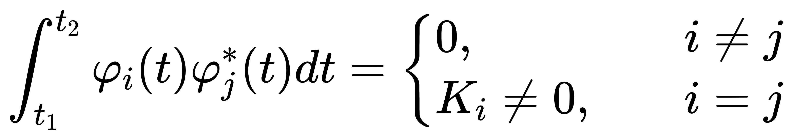

从向量到傅里叶变换
从向量到傅里叶变换——关于内积与正交分解的思考
起因是信号与系统课上讲到傅里叶变换，其中提到了两个复函数的内积的表达式：
其中，我对于g(x)这个函数取共轭的原因感到很迷惑。于是花了两天时间查找了一些资料，对于这个问题有了一些见解。查资料的过程中也带出了一连串的概念，比如函数正交，完备正交函数集等。为了防止自己将来忘掉，我会在下面一一介绍这些东西。
内积
实向量内积的定义
这是毋庸置疑的，高中时就学过。
复向量内积的定义
从实数域拓展到了复数域，公式需要做一些调整，要保证复数的内积不会是负数，即保证内积的正定性
比如a(i, i)与b(i, i)做内积，按照实向量的定义算，算出内积的值是-2，这显然是不符合正定性的。所以复向量内积定义为：
其中，b向量的各个维度的值都取了共轭。此时再用此公式计算(i,i)和(i,i)的内积，得到的是2，满足了正定性。(关于这个地方，其实我也不能特别的接受，与身边的同学讨论了很久，只有这么解释还算合理的。相关的定义涉及到了酉空间)
(在后续求系数的过程中，我可能又理解了一点为什么内积是这么定义的，下面会说)
离散函数的内积
要理解函数的内积，先从离散函数的内积说起。离散函数可以看做是n维的向量
那么根据向量内积的定义，离散函数在x1到xn上的内积可以定义为
连续函数的内积
由离散函数的内积推广可知，f(x)和g(x)在x1到xn上的内积定义为
综上，要理解函数的内积，需要先理解复向量的内积。
正交
向量的正交
向量的正交定义为内积等于0
函数的正交
类似地，函数的正交也定义为内积等于0
上面的式子表示f(x)和g(x)再区间(a,b)上正交
正交基
在二维空间中，可以用两个正交的向量表示出空间中的所有向量。例如(1,0)和(0,1)这一对正交基可以表示二维平面内的所有向量。虽然两个不共线的向量也可以做到这点，但显然用正交基表示能使系数更简单。
我们来尝试一种很新的东西，既然向量可以用正交基表示所有向量，那么能不能用正交函数来表示复空间内所有函数
完备正交函数集
正交函数集
若n个函数φ1(t),φ2(t),…,φn(t)构成一个函数集，当这些函数在区间(t1,t2)内满足：
则称此函数集为(t1,t2)上的正交函数集。
完备正交函数集
如果在正交函数集{φ1(t),φ2(t),…,φn(t)}之外，不存在任何函数φ(t)(≠0)能够满足正交条件：
则称此函数集为区间(t1,t2)上的完备正交函数集。
函数的正交分解(重量级)
类比于向量，在二维平面内，设a=(1,0),b=(0,1)，那么任何一个平面内的向量都可以用
c = k1 × a + k2 × b
的形式来表示
那么对于函数f(t)，可以用在(t0, t0+△t)上的完备正交函数集的线性组合来近似表示
下面是我自己推导的求解Ck系数的过程，我在网上没有搜到类似的推导（搜到了一个，但它的证明过程还是有问题的），懒得看推导可以跳过直接看结论（）如有错误，欢迎指正
这种表示方法是存在一定误差的，我们认为误差服从正态分布，定义为两个复数的差的模值
为了估计Ck的值，采用极大似然估计法，在区间(t0,t0+△t)上取m个值
(t1, f(t1)),(t2, f(t2)),…,(tm, f(tm))，认为发生这些事件的概率最大，构造极大似然函数
但是这样我们不满意。明明f(x)上有无穷多个点，我们却只取了m个点
可以确定的是，取的点越多，极大似然的结果越准确。
当m->无穷时，(t0,t0+△t)被划分成了无限小的m个区间，我们认为在这个无限小的区间内的函数值处处相等，不妨认为这个区间上有△t/m个点，这些点构造极大似然函数。
把m个区间都乘上，得到终极似然函数(?)
这种使误差达到最小的方法叫最小二乘法
敲得手要抽筋了QAQ
不过LaTex还是蛮爽的
根据①式，为了使最大似然函数L(Ck)最大，使J(Ck)最小即可，因为其他参数都是常数，不用考虑。以C1为例，为了求C1取什么值的时候J(Ck)最小，需要C1的实部和虚部偏导都为0。(Ck是复数，需要分解成实部和虚部分别求偏导)
结论：
那么，如果在(t0,t0+△t)区间上存在完备正交函数集，就可以算出Ck系数，理论上可以无误差地表示出任意一个函数（需要满足狄利克雷条件）
对内积形式的解释
在对系数进行求解的时候，我可能逐渐理解了内积为什么是这么定义的
首先，通过这种方式定义函数正交，约掉了正交基相乘求和(详情见上面推导过程)
其次，我们求出的结果，“非常巧”地长成了一个函数乘另一个函数的共轭再积分的形式
这是为了数学表达式的简洁性和合理性。
为了更好地表达这种结果，定义这种表达式为“内积”
就好比是，0的阶乘等于1，为什么这么定义？这是为了保证阶乘运算的合理性
再者，动能的定义为什么是(1/2)mv^2，系数1/2是怎么来的？
假设以力F推动一个质量为m的木块
那么可以推出
这里注意到，(1/2)mv^2这个表达式肯定是有特殊含义的。在这里把它定义为物体的动能。
那么内积同理，在计算出函数正交分解的系数后，发现出现了函数乘以另一个函数共轭再积分的形式，这种形式也可能具有特殊的含义，所以把它定义为了内积。
（仅个人理解）
傅里叶变换
构造一个完备正交函数集
正交性证明：
完备性这里不做具体推导（还没会）
综上所述，可以用上述的完备正交函数集来表示任意信号
即傅里叶的描述，任何信号都可以用周期信号的组合来表示
总结
根据向量与函数的类比，向量可以用正交基的线性组合来表示出空间内的所有向量，那么函数也可以用完备正交函数集来线性表示出来。这是对傅里叶变换的另一种解释。